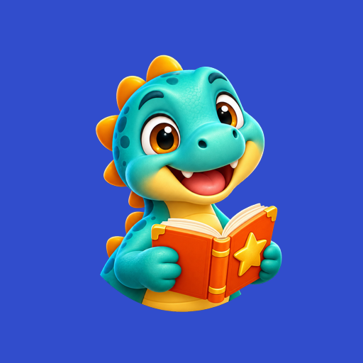
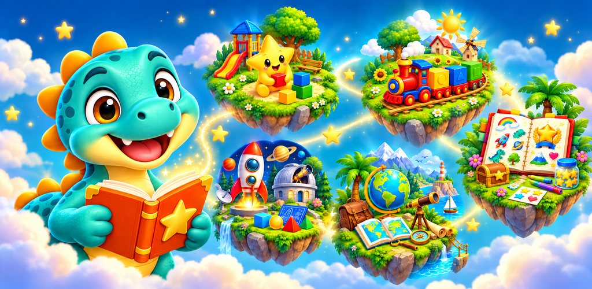
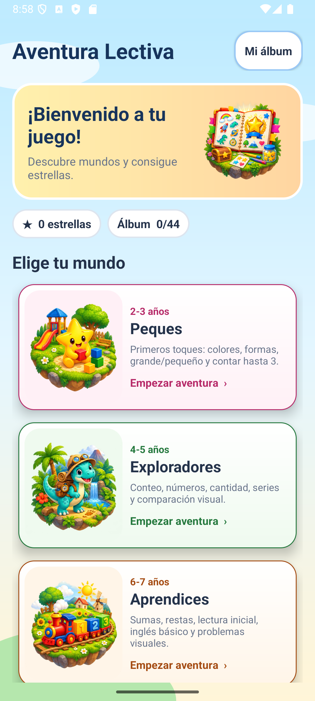
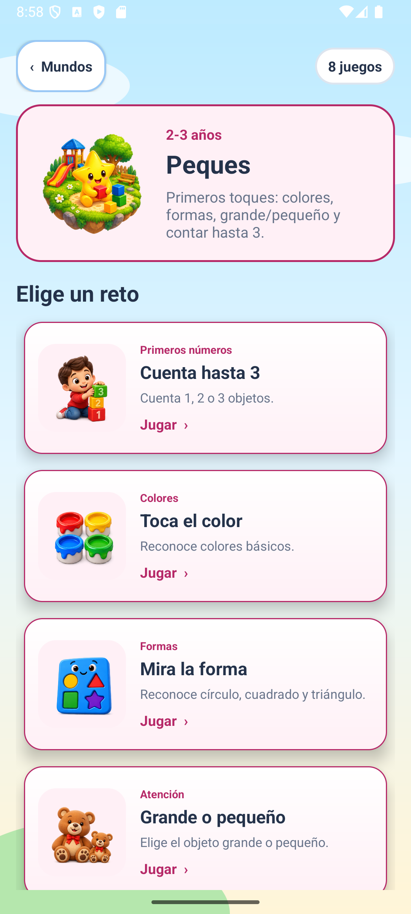
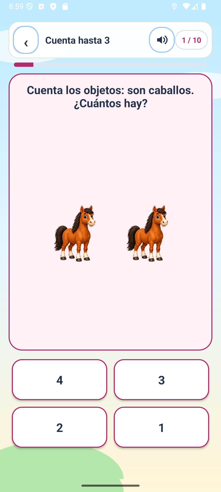

Peques
Colores, formas, tamaños y conteo hasta 3.
Aventura Lectiva · Próximamente en Google Play
Cinco mundos adaptados de 2 a 10 años convierten matemáticas, lectura, inglés, memoria, geografía y ciencias en pequeños retos llenos de color.

Juegos educativos para crecer jugando.


Elige entre Peques, Exploradores, Aprendices, Expertos y Maestros según el momento de aprendizaje.

Cada mundo reúne actividades visuales adecuadas a su edad: contar, colores, formas, lectura, memoria y más.

Diez preguntas, cuatro respuestas grandes, narración opcional y feedback amable para seguir practicando.
Manual de uso
La navegación está pensada para que cada niño pueda concentrarse en una sola decisión cada vez.
En la portada selecciona la franja de edad. Cada mundo muestra sus materias y el tipo de habilidades que se practican.
Abre una actividad. Hay 44 en total y cada una ofrece al menos 30 preguntas o situaciones diferentes.
Responde diez preguntas. En Peques y Exploradores se puede corregir un primer fallo; desde Aprendices se avanza tras el primero.
Cada acierto suma una estrella. Completar la ronda sin agotar los intentos desbloquea o mejora una pegatina del álbum.
Cinco etapas
Las actividades aumentan progresivamente en variedad y dificultad, manteniendo siempre instrucciones breves y respuestas visibles.
Colores, formas, tamaños y conteo hasta 3.
Números, cantidades, series y comparación visual.
Sumas, restas, lectura inicial, inglés y problemas visuales.
Multiplicaciones, fracciones, cálculo, memoria y ortografía.
Problemas combinados, geometría, geografía y ciencias.
Zona de familias
El acceso solicita leer un código escrito con palabras y escribirlo en cifras. Es una puerta para separar los ajustes familiares del área de juego.
Acceso familiar
Pide ayuda a una persona adulta para entrar.
Activa o desactiva la lectura en voz alta con las voces incluidas en la app.
Permite leer también las cuatro opciones en Peques y Exploradores.
Habilita el micrófono en los minijuegos cuando el reconocimiento local del móvil está disponible.
Controla por separado los tonos de acierto y de intento.
Reduce el movimiento visual desactivando celebraciones y animaciones.
Cambia o borra el apodo local y consulta los retos completados en cada mundo.
Una compra única opcional elimina la publicidad; no es una suscripción. Desde esta zona también se puede consultar el precio y restaurar una compra anterior.
Privacidad
Aventura Lectiva no requiere una cuenta para jugar. Estos son los comportamientos previstos en la versión preparada para lanzamiento.
El apodo opcional, el progreso, las estrellas, las pegatinas y los ajustes permanecen en el dispositivo. Se pueden eliminar borrando los datos de la app o desinstalándola.
La narración funciona con modelos incluidos. Las respuestas habladas son opcionales, solo escuchan al pulsar «Hablar» y usan reconocimiento local de Android. La app no conserva grabaciones.
No se solicitan cuentas, correo electrónico, ubicación ni cámara. Si el reconocimiento local no está disponible, el micrófono permanece deshabilitado y se responde con botones.
Cuando se habiliten anuncios, el SDK publicitario puede transmitir datos técnicos. Las compras se tramitan mediante Google Play. La publicidad nunca aparece dentro de una pregunta ni es necesaria para ganar pegatinas.
Para consultas sobre privacidad o soporte: dmpstudiodev@gmail.com.